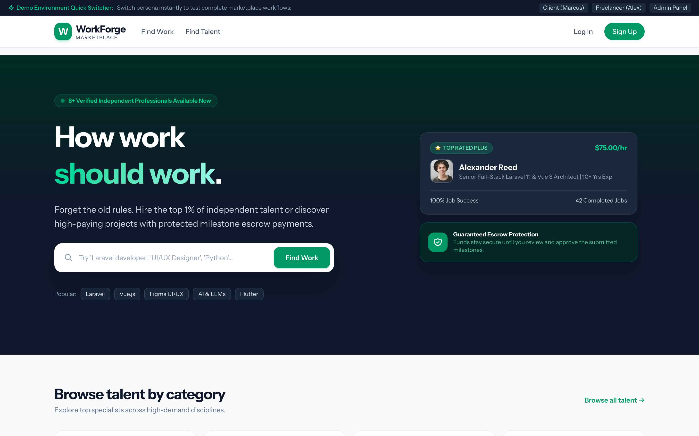
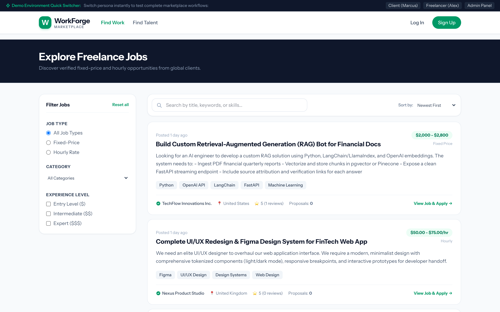
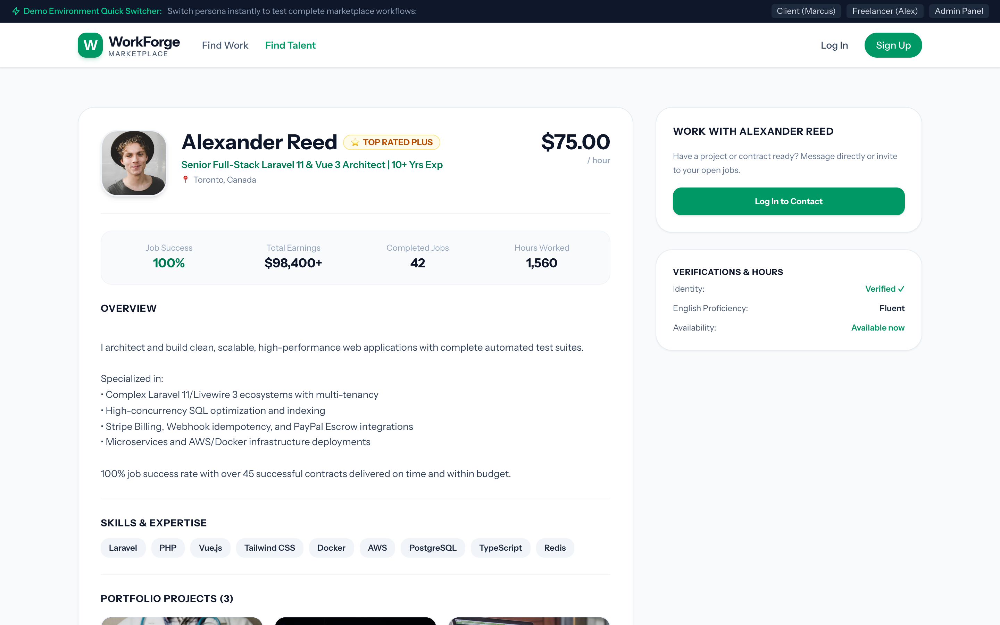
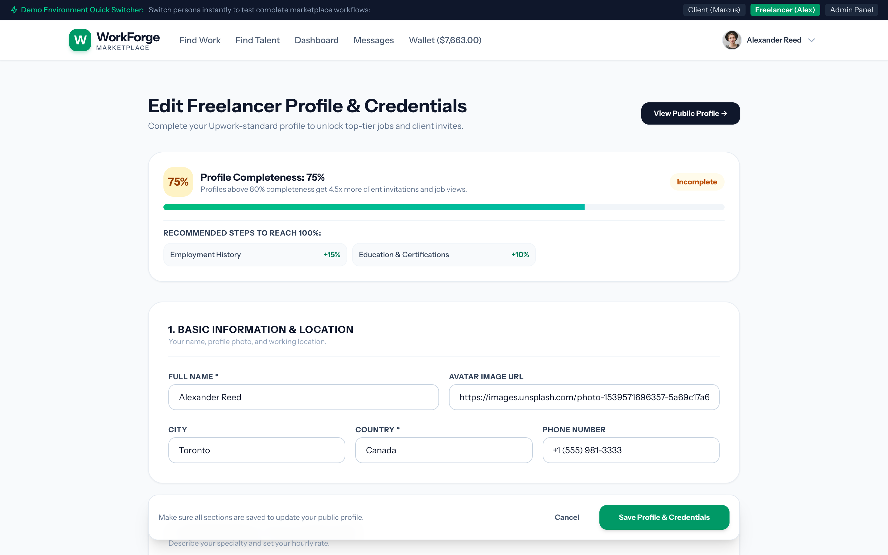
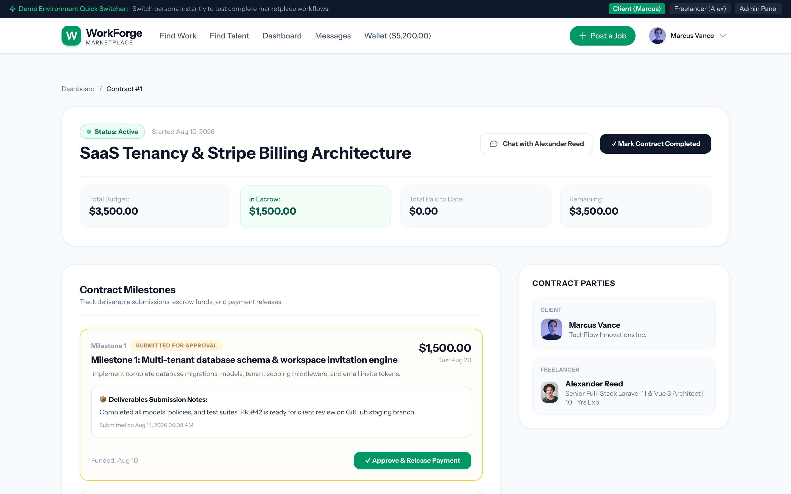
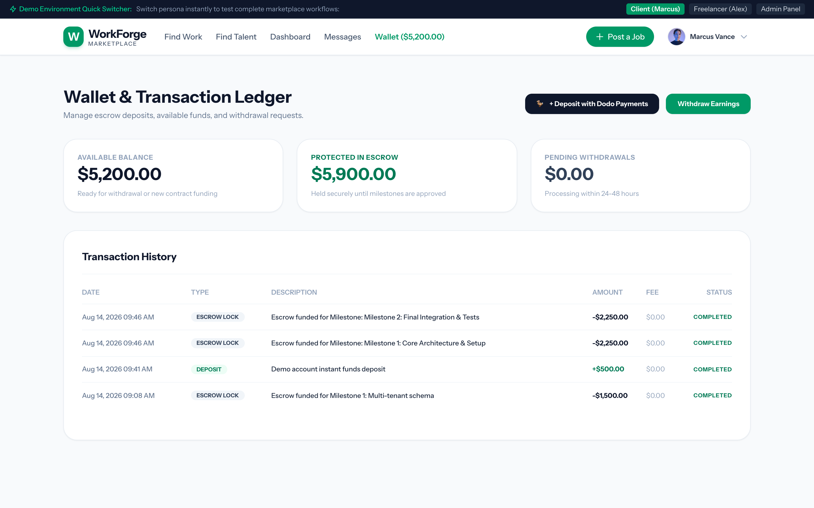
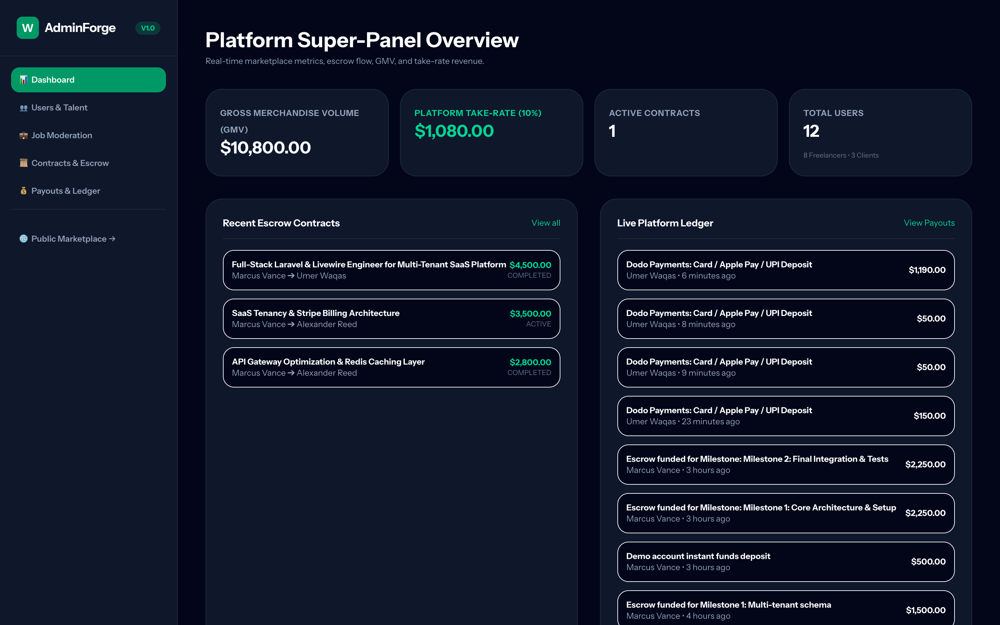

Introduction
WorkForge – Freelance Marketplace Script (Upwork Clone).
WorkForge is a full-featured, enterprise-grade freelance marketplace and escrow platform, a complete Upwork-style clone. It lets you run your own platform where clients post jobs, freelancers build profiles and submit proposals, contracts are managed with milestone-based escrow, and payments flow safely through an integrated wallet.
- Very simple installation in 5 minutes (no coding or technical knowledge needed)
- Full escrow & milestone payment system
- 12 Months Support
Features
WorkForge offers lots of awesome features out of the box, such as:
- Marketplace home page with hero, categories & featured jobs
- Real-time job search with faceted filters (category, budget, experience, job type)
- Talent directory & verified freelancer profiles with portfolio gallery
- Upwork-style profile builder with profile completeness engine
- Proposals & bidding with fee calculator and milestone breakdown
- Featured Job Listings & Promoted Proposals monetization
- Contract workroom with milestone-based escrow management
- Financial ledger & wallet center (deposits, escrow holds, payouts)
- Built-in messaging / chat system
- Reviews, ratings & job success score
- Dispute management
- Super-admin panel with revenue analytics, GMV tracking & fee audit ledger
- Dodo Payments merchant-of-record checkout integration
- Email notification engine
- Google & GitHub social login (optional)
- SEO-friendly server-side rendered pages (Blade)
- Clean and organized code
- Well documented code
- Standard folder structure
- And many more inside...
Credits :)
Special thanks to these awesome technologies that help us build this system.
Installation
Installing WorkForge takes about 5 minutes. This guide is written in simple, non-technical language so that anyone can install it on shared hosting (cPanel), Hostinger, Namecheap, Bluehost, SiteGround, a VPS, or even on your own computer for testing.
Installation requirements
You will need to make sure your server meets the following requirements:
- PHP 8.2 or 8.3+
- MySQL 5.7 or higher (MySQL 8 / MariaDB also fine)
- BCMath PHP Extension
- Ctype PHP Extension
- Fileinfo PHP Extension
- GD PHP Extension
- JSON PHP Extension
- Mbstring PHP Extension
- OpenSSL PHP Extension
- PDO PHP Extension
- PDO MySQL PHP Extension
- Tokenizer PHP Extension
- XML PHP Extension
Important:
These extensions are already enabled on almost all cPanel / Hostinger / shared hosting accounts, so you normally don't need to do anything extra.
I) Installation on Shared Hosting / cPanel (Recommended)
This is the recommended way to launch your marketplace. You do not need any technical knowledge — you only use the cPanel File Manager and a web browser.
Step 1 : Download the WorkForge package workforge_v1.0.zip from your purchase
receipt / download page and save it on your computer. Do not extract it yet — you will upload
the zip file as-is.
Step 2 : Log in to your hosting control panel (usually
https://yourdomain.com/cpanel or the "cPanel" / "Hosting Panel" button in your hosting
account area). Then open File Manager (under the "Files" section).
Step 3 : In File Manager, open the public_html folder (this is your website's root
folder). Click Upload at the top and select the workforge_v1.0.zip file from your
computer. Wait until the upload reaches 100%.
Step 4 : Once uploaded, right-click on workforge_v1.0.zip inside File Manager and
choose Extract. When asked for an extraction path, use
/public_html (the current folder). After extraction, you can delete the zip file to keep
the folder clean.
Step 5 : Create your MySQL database. In cPanel click MySQL® Database Wizard
(or "MySQL Databases"):
- Create a database — for example
workforge_db— and click Next Step. - Create a database user — for example
workforge_user— and choose a strong password (write it down!). Click Create User. - Add the user to the database — select ALL PRIVILEGES and click Make Changes.
Step 6 : Configure your .env file. In File Manager, make sure
Show Hidden Files (dotfiles) is enabled in the settings. Open the .env file that came
with the package (right-click → Edit), and update only these lines with your own details:
- Replace
https://yourdomain.comwith your real domain. - Replace
workforge_db,workforge_userand the password with the database details you created in Step 5. - If your host uses a database host name other than
127.0.0.1(shown inside your cPanel MySQL section), use that instead. - SMTP details are only needed if you want the site to send emails. With Gmail, use an App Password. You can also use your host's own SMTP server.
- Click Save when you are done.
Step 7 : Run the one-click setup wizard. Open your browser and visit:
The installer automatically creates all database tables and fills them with categories, skills, sample jobs and demo users. When you see the green "Setup completed successfully!" message, your marketplace is ready. Click the Launch WorkForge Marketplace button to open your site.
Security tip:
After installation, delete the installer.php file from the public folder
in File Manager so the setup wizard can no longer be opened by anyone else.
Step 8 : (Only if the installer did not create it automatically) create the public
storage link so uploaded images appear correctly. Open the Terminal icon in cPanel (if your
host provides it) and run:
No terminal? No problem — your host can do this for you in one free support ticket, or you can open a ticket with us and we will guide you.
Step 9 : Open https://yourdomain.com and log in with the demo accounts
below (or with your own registered account). That's it — you are live!
Default demo logins (password for all of them is password):
- Admin:
admin@upwork.test - Client:
client@upwork.test - Freelancer:
alex.dev@upwork.test/sophia.ui@upwork.test
II) Installation Locally (Windows / Mac / Linux)
A) With XAMPP (Windows)
=> Install XAMPP via apachefriends.org
Step 1 : Extract the workforge_v1.0.zip package to C:/xampp/htdocs/workforge.
Step 2 : Open the XAMPP Control Panel and start Apache and MySQL.
Step 3 : Open http://localhost/phpmyadmin,
click New, create a database named workforge (utf8mb4_general_ci collation).
Step 4 : In the downloaded package, open the .env file with a text editor (Notepad)
and change the database lines to:
Step 5 : Visit http://localhost/workforge/installer.php?secret=workforge2026
in your browser and wait for the green success message.
Step 6 : Open http://localhost/workforge and log in with the demo accounts
shown above.
B) With Laragon or Valet (Windows / Mac)
Step 1 : Use Laragon (Windows) or
Laravel Valet (Mac) to serve the
project folder you extracted.
Step 2 : Create a MySQL database named workforge in the included phpMyAdmin.
Step 3 : Edit the .env file (database block) with your local database credentials.
Step 4 : Open http://workforge.test/installer.php?secret=workforge2026 and wait
for the green success message, then open your site.
Note:
We recommend hosting your marketplace on a real web host so everyone on the internet can visit it. Local installation is only for testing and development.
Update
Updating WorkForge to a newer version keeps your marketplace secure and full of new features.
Step 1 : Back up your database first (see the "Backup Database" section). You can
also copy the whole storage/app folder as a backup of uploaded files.
Step 2 : Download the new package from your download page.
Step 3 : In cPanel File Manager, upload and extract the new zip over your existing
files (choose Overwrite / Replace existing files when asked). Do not overwrite
your .env file — keep your settings.
Step 4 : Visit
https://yourdomain.com/installer.php?secret=workforge2026 once to run the update
migrations, then open your site. New tables and columns are created automatically while your existing
data is preserved.
Important:
Always take a database backup before updating. If anything goes wrong, you can restore it quickly.
Backup Database
Take regular backups so your marketplace data is always safe.
Option 1 – phpMyAdmin : Open phpMyAdmin from cPanel, select your database, click the
Export tab, choose Quick / Custom method and click Go. A .sql file is
downloaded — keep it somewhere safe.
Option 2 – cPanel Backup Wizard : In cPanel, open Backup Wizard → Backup →
MySQL Databases → Download next to your database.
Option 3 – Restore : In phpMyAdmin, select your database, open the Import tab,
choose the .sql file and click Go.
Login & Registration
Anyone can register on your marketplace as a Client or a Freelancer, or log in with Google / GitHub
(if you enabled it in the .env file).
Register : Click Join / Sign Up on the header, choose whether you are a
client or a freelancer, fill in your name, email and password, and click Register.
Login : Click Sign In, enter your email and password. You can also use the social
login buttons if OAuth is configured.
Forgot password : Use the Forgot your password? link — the reset email will be
sent using your SMTP settings from the .env file.
Demo accounts (password: password):
- Admin:
admin@upwork.test - Client:
client@upwork.test - Freelancers:
alex.dev@upwork.test,sophia.ui@upwork.test,david.ai@upwork.test
Dashboard
After logging in, each user sees a personal dashboard with live statistics relevant to their role.
- Freelancer dashboard: total earnings, active contracts, open proposals, job success score, profile completeness, and quick links to the wallet and workroom.
- Client dashboard: open jobs, active contracts, money in escrow, submitted proposals review, and quick links to post a new job or browse talent.
- Admin dashboard: platform GMV, total revenue from fees, registered users, open jobs, recent transactions and charts (see the Super Admin Panel section).
Marketplace Home
The landing page is fully server-side rendered for SEO and showcases your marketplace instantly.

- Hero section with headline, search bar and call-to-action buttons.
- Live job category grid and a "How it works" section for clients and freelancers.
- Featured Job Listings spotlighted at the top with a highlighted card style.
- Popular skills cloud and latest marketplace activity.
Browse Jobs
Clients post jobs with a title, description, category, skills, budget range, experience level and job type (fixed-price / hourly).

- Real-time search as you type.
- Faceted filters: category, job type, budget range and experience level.
- Sort by newest, most proposals, or highest budget.
- Featured jobs are highlighted with a distinct card style and badge.
- SEO-friendly URL structure:
/jobs/category/slug.
Freelancer Profiles
The talent directory lets clients discover verified freelancers with rich public profiles.

- Public profile with cover image, avatar, headline, bio and location.
- Skills, certifications, hourly rate and job success score.
- Portfolio gallery of past work.
- Reviews & ratings left by clients after completed contracts.
- Search & filter freelancers by skill, rating and availability.
Profile Builder
The Upwork-style profile builder guides freelancers step-by-step to a complete, hireable profile.

- Completeness engine shows a live profile-completeness percentage.
- Sections: overview, skills, experience, education, portfolio, certifications, and more.
- Featured freelancers and top-rated badges shown to clients.
Proposals & Bidding
Freelancers browse jobs and submit proposals with a cover letter and a price breakdown.
- Real-time fee calculator shows the platform fee and the freelancer's take-home amount.
- Milestone breakdown lets clients split fixed-price jobs into milestone payments.
- Promoted Proposals can be featured to stand out to the client.
- Clients review proposals in a dedicated review room, message the freelancer, and accept or reject with one click.
Contract Workroom & Escrow
Once a proposal is accepted, a secure contract workroom opens where client and freelancer collaborate.

- Milestone-based escrow management: funds are locked in escrow when a milestone is funded.
- Deliverable submission, approval flow and milestone payment release.
- Dispute handling with admin oversight.
- Automatic review & rating exchange after contract completion.
Wallet & Payments
The financial ledger keeps every transaction transparent for clients, freelancers and the admin.

- Deposit funds into your marketplace wallet using Dodo Payments (merchant of record checkout).
- Funds are held in escrow until milestones are approved.
- Freelancers withdraw earnings to their wallet / payout method.
- Full transaction history with statuses (pending, held, completed, refunded).
To set up live payments, add your Dodo Payments API keys in the .env file:
Leave DODO_PAYMENTS_ENVIRONMENT=test_mode while you are testing.
Messaging
A built-in chat system lets clients and freelancers discuss jobs, proposals and contracts in real time, right on your platform.
- Start a conversation from a job, a proposal, or a freelancer profile.
- Conversation list with unread counters.
- Message history is stored per contract for full context.
Super Admin Panel
Log in with the admin account (admin@upwork.test) and open
/admin to manage the entire platform.

- Revenue Hub: real-time fee stream analytics, GMV, platform earnings and a fee audit ledger of every single collected fee.
- Users: search, view and manage clients and freelancers; verify, suspend or remove accounts.
- Jobs & proposals: moderate listings, feature/promote jobs and proposals.
- Contracts & escrow: oversee active contracts, escrow holds and milestone releases.
- Payouts: manage freelancer payout requests.
- Disputes: review and resolve disputes.
- Categories & skills: manage the taxonomy of the marketplace.
Support & Contact
We are here to help you before and after your purchase. If you need any help with installation, configuration or customization, contact us directly:
- WhatsApp / Chat: +92 345 9347900
- Email: um.waqas.khan@gmail.com
We usually reply within 12–24 hours. Please include your purchase code and a screenshot of any error message so we can help you faster.
Rate Us
We hope you love WorkForge! If you enjoy the script, please take a minute to rate our work on CodeCanyon — your positive review means the world to us and helps us keep improving.
Have a suggestion? Message us on WhatsApp or email and we will happily consider it for the next update.